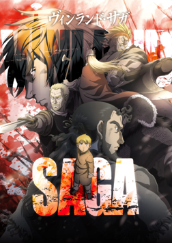

film |
Vinland Saga menggebrak dengan latar samudera di wilayah Inggris pada penghujung milenium pertama, tepatnya pada era 987. Dalam episode pembukanya ini, ditampilkan seorang kesatria yang belakangan diketahui bernama Thor yang dengan gagahnya (atau bengis, bergantung perspektif kalian) membantai sekitar satu peleton pasukan lawan. Dia nyaris tak terkalahkan hingga seorang musuh berhasil menyeretnya ke lautan. Alih-alih tewas, Thor justru memalsukan kematiannya. Sekitar 17 tahun berselang, Thor diceritakan telah membangun rumah tangga yang tenteram bersama istrinya, Helga, dan kedua anaknya, Ylva dan Thorfinn, di suatu pedesaan di negeri Islandia. Di tempat ini, dia tak lagi memikirkan soal peperangan dan beban moral yang dirasakan selepas menghabisi nyawa manusia. Suatu ketika, tibalah Floki, eks rekannya yang meminta Thor untuk turut serta menginvasi Inggris bersama pasukan Kerajaan Denmark. |
To understand the example better, we have added borders to the table.